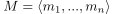
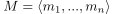

Torsionsfreiheit und Freiheit eines endlich erzeugten Moduls
1. Satz
Sei  ein endlich erzeugter Modul über einem Hauptidealring  .
TFAE:
.
TFAE:
 ist torsionsfreier Modul
ist torsionsfreier Modul- ist ein freier Modul
Sei  ein endlich erzeugter Modul über einem Hauptidealring .
TFAE:
ist torsionsfreier Modul ist ein freier Modul
 frei von Rangd:wa
frei von Rangd:wa